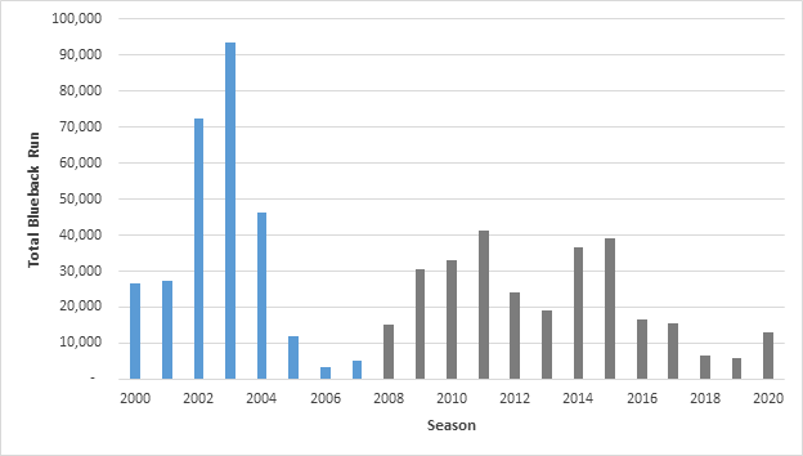
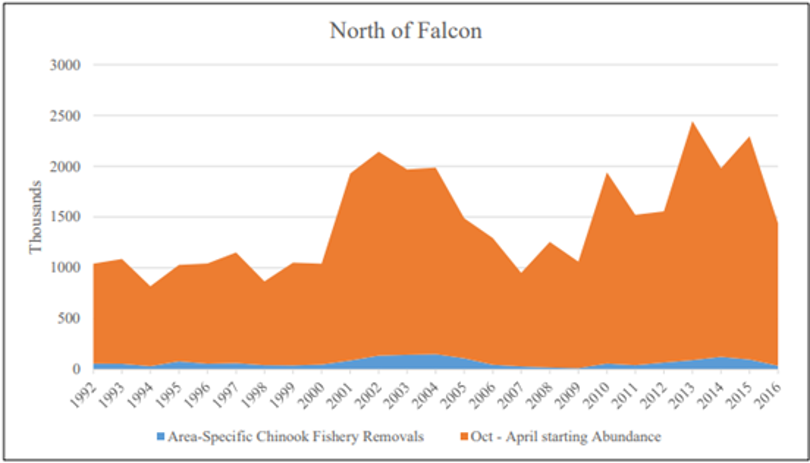

Salmon are iconic in the Pacific Northwest and have been prized by indigenous cultures in this region since time immemorial. Wild Pacific salmon runs are anadromous, with fish using both ocean habitats and spawning grounds in rivers during their lifecycle. Salmon stocks are managed by state, federal and tribal fishery managers working across international boundaries, and management efforts are often specific to species, season, and river. Efforts to rebuild salmon stocks in recent decades have failed to recover the abundant populations of the past. Among other impacts, declining salmon stocks can increase competition among fishers, imperil the continued existence of Southern Resident Killer Whales, and threaten to undermine salmon ceremonies and other cultural practices of coastal tribes. Hundreds of thousands of non-native Atlantic salmon have escaped from aquaculture net pen operations in Puget Sound recently, further imperiling wild salmon stocks in the Pacific Northwest.
Trends - Blueback salmon
 Estimated Quinault blueback (sockeye) salmon run sizes from 2000–2020, including the 2008–2020 assessment period for this report indicated by grey bars. The Quinault blueback salmon fishery was closed prior to each season in 2018, 2019, and 2020 because of historically low returns of wild adult salmon to the Quinault River following extremely poor ocean conditions beginning in 2014. Source: L. Gilbertson/ Quinault Indian Nation, personal communication, January 8, 2021.
Trends - Chinook salmon
 Annual trends in adult Chinook salmon abundance north of Cape Falcon, Oregon and area-specific reduction in adult Chinook salmon abundance modeled to result from all Pacific Fishery Management Council salmon fisheries (from October through the following September). Image: Pacific Fishery Management Council, 2020.